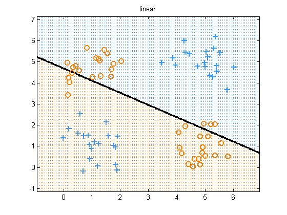

Apply L2 Logistic Regression to the XOR problem in original feature
Contents
space
We show that the data is not linearly separable See logregXorDemo for a solution to this problem
% This file is from pmtk3.googlecode.com function logregXorLinearDemo()
[X, y] = createXORdata();
lambda = 1e-2; % for numerical stability
Linear Features
model = logregFit(X, y, 'lambda', lambda); yhat = logregPredict(model, X); errorRate = mean(yhat ~= y); fprintf('Error rate using raw features: %2.f%%\n', 100*errorRate); plotDecisionBoundary(X, y, @(X)logregPredict(model, X)); title('linear'); printPmtkFigure('logregXorLinear')
Error rate using raw features: 49%
end